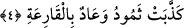

ikinci mef’ûlüdür. Cümle bütün hâlinde, kıyâmetin korkunçluğunu ve fecâatini
pekiştirmektedir. Çünkü o, kıyâmetin mahlûkatın bilgilerinin çerçevesinin dışında bir
olgu olacağını haber vermektedir. Bir başka ifâdeyle kıyâmetin durumunu ne kadar
büyük olduğunu, onun korkunçluğunun ve şiddetinin boyutlarını açıklamaktadır. Bu
boyut, algılama gücü ne kadar olursa olsun hiç kimsenin aklının eremeyeceği, vehminin
ve hayalinin ulaşamayacağı boyuttadır. Buna göre kıyâmet bütün bu kavrama ve
algılardan çok daha büyük ve korkunç olacaktır. Bunu ifâdeye dökerek bildirmek
mümkün değildir.
Âlimlerden birisi şöyle der: Peygamber Efendimiz (s.a.) kıyâmetin kopacağını her ne
kadar biliyorsa da; nasıl kopacağını tam olarak bilmiyordu. Efendimiz’in kıyâmeti
hakkıyla bildiği, ancak âyette başkalarına işittirmek üzere kendisine “Hâkka’nın ne
olduğunu sana ne bildirdi” şeklinde sorulmuş olması da ihtimâl dâhilindedir.
et-Tevilatu’n-necmiyye’de bu âyet-i kerîme şöyle tefsir olunuyor: Cenab-ı Hak “el-
Hâkka” ifâdesiyle her şeyi yok eden vâhidiyyet aynasında ıtlak, ıtlâki ve ahadî
tecellîsine işâret etmektedir. Nitekim bu gerçeği belirtmek üzere Allah; “Bugün
hükümranlık kimindir? Kahhar olan tek Allah’ındır” (el-Mü’min, 40/16) buyurur ki
şu anlama gelir: Bugün hükümranlık, mutlak zâtı örten taayyünât zulmetlerinin tamamını
ahadiyyet nurlarının saldırıları ile yok eden kahhâr Allah’ındır. Kendisine “hâkka” diye
isim verilmesi; zâtında sâbit ve nefsinde tahakkuk edişinden dolayıdır.
4. Semûd ve Âd kavimleri, kapılarını çalacak felâketi (kıyâmeti) yalan
saymışlardı.
“Semûd” Sâlih peygamberin kavmi “ve Âd” Hud peygamberin kavmi “Karia’yı”
kıyâmeti “yalan saymışlardı.”
Sâlih peygamberin kavmi olan “Semûd” kelimesi “semd” kelimesinden türemedir.
Semd; az su anlamına gelmektedir.
Hûd kavminin ismi olan “âd” kelimesi ise kabile adıdır. Bu kelime Kamus’ta ifâde
edildiği üzere “engel olan” anlamına gelmektedir.
“el-Kària” kelimesi kıyâmetin isimleri arasında geçer. Kıyâmete “karia” denmesi,
insanlara vurmasından dolayıdır. Bir başka ifâdeyle kıyâmete karia denmesi, o günün
çeşit çeşit korku ve fecâatlerle insanlara vurmasından dolayıdır. Yâni kıyâmet günü, bu
korkularla insanlara vuruyormuşçasına onların başlarına gelecektir. Gökyüzü yarılarak
ve çatlayarak, yeryüzü ve dağlar birbirine çarpılıp darmadağın edilerek, yıldızlar
söndürülerek ve dağılarak bu olay gerçekleşecektir.
Âyette “el-Hâkka” kelimesine dönecek zamir yerine “el-Kària” kelimesinin
getirilmesi, kıyâmetin içerisindeki “vurma” anlamına daha fazla delâlet etme ve onun